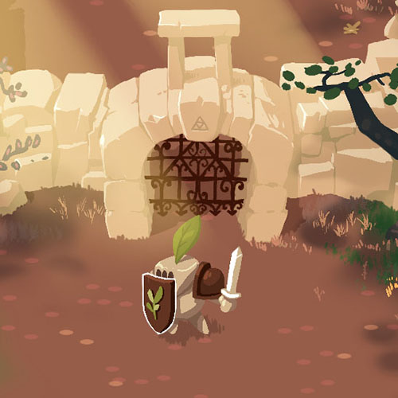
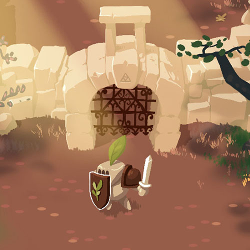

Gabriellesolo project
Work in Progress on a personal project: a Zelda-1 inspired top-down adventure game about a little cat exploring a forest. I wanted to learn to program, so I'm making everything. Play it!

I tried to give a unique graphical identity that spurs the player to explore, and have hand-drawn 2D animations (my portfolio was too sparse about it). This way, the project can be a showcase of all my skills.
The game scope had to be small: challenging but feasible in a short time.
 
I knew how to program little toys, but nothing as complex as a game. So quite a few challenges waited to be slained : mainly how to handle the states of the game, and how to structure all these "behaviours" (moving, attacking, picking coins, following the player...). I choose the Entity-Component-System way of reasoning. Its mantra of everything being a group of atomic components was very appealing. This is a fascinating way of thinking about objects.

You can follow the development on twitter.